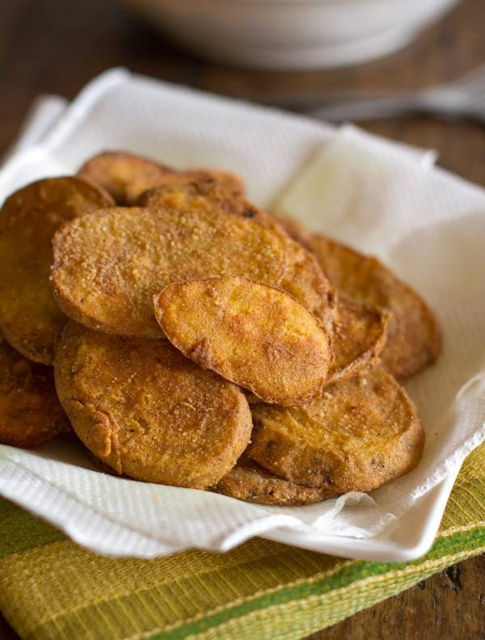

Mojo Potatoes

Description
Crispy Potato Mojos! Super easy and yummy snack or appetizer for your next
get-together. Potatoes dipped in fried chicken mix = AMAZING.
Ingredients
- 4 potatoes, washed
- 1 cup milk
-
11/2 cups fried chicken breading mix, like Shore Lunch brand or Oven Fry
brand
- Oil for frying
Steps
-
Cut the unpeeled potatoes into thin slices, about 1/4 inch thick. The
thinner you cut them, the more crispy (like chips) they will get. I like
to cut some a little thicker and some thinner.
-
Place 1-2 cups oil (about one inch deep) in a large frying pan. Heat oil
over medium heat until water sizzles across the top. While oil is
heating, dip potato slices in milk and coat with the fried chicken
breading mix.
-
Carefully drop potatoes into the oil right away (so the batter doesn’t
get soggy) and fry for 2-3 minutes on each side, adjusting heat as
necessary.
-
Remove and drain on a paper towel lined plate. Serve with ranch,
ketchup, cheese, or any other kind of sauce.